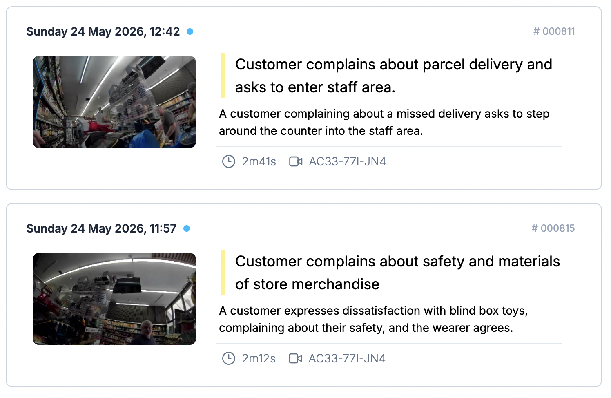
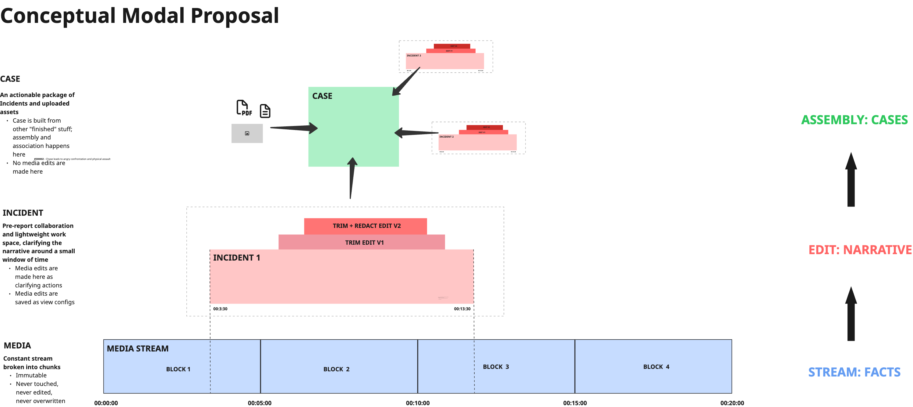
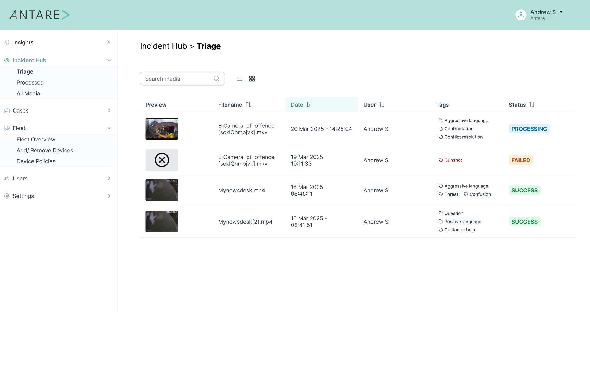
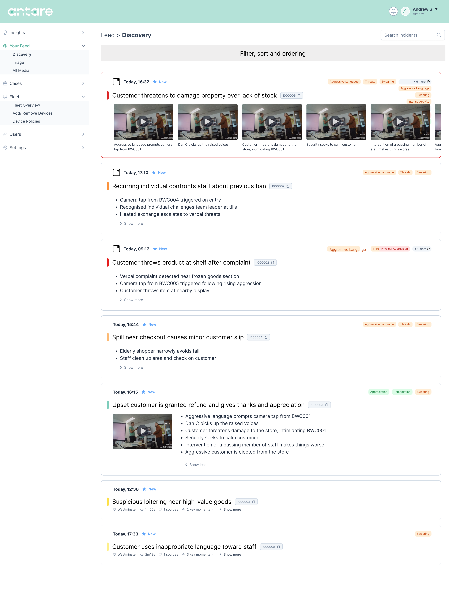
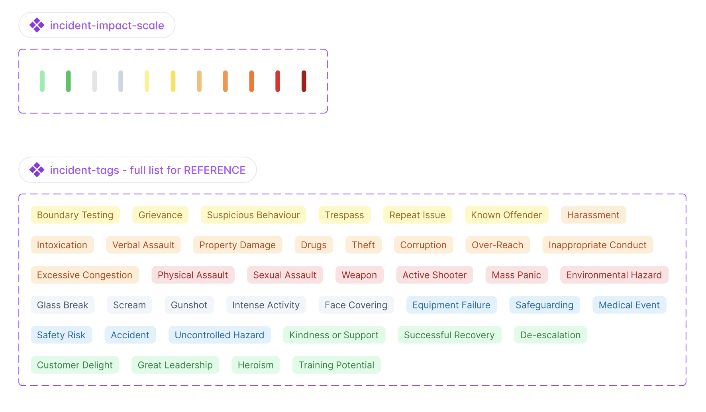
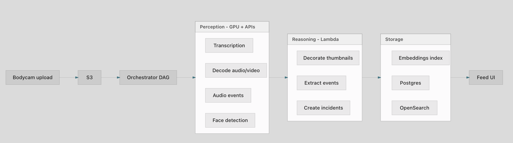

Context
A camera sees everything. The feed must not.
Antare builds intelligence from body-worn camera footage — turning continuous video into structured events that operators can act on. The AI pipeline works: cameras capture, models classify, incidents appear. The problem is what happens next.
Early feeds were clogged with neutral and low-value events. Routine customer service flagged as incidents. Colleagues gossiping classified as "inappropriate conduct." Break-room behaviour judged as on-floor misconduct. The system was generating narrative faster than humans could evaluate it — and much of that narrative was wrong, exaggerated, or simply not worth anyone's attention.

Challenge
From datagrid to editorial system
The first design instinct — a sophisticated datagrid — treated the feed as a database to be sorted and filtered. That solved the wrong problem. Operators don't need more columns. They need a system that understands why someone is looking, and what kind of attention each event deserves.
Three layers of complexity had to be separated:
- Reality — immutable media, the factual record
- Narrative — AI-generated incident descriptions, editable and contestable
- Evidence — the assembled case, built from incidents for action
Each layer has different rules, different audiences, and different design requirements. Conflating them produces the kind of overconfident, context-blind output the audit revealed.


What I did
Two feeds for two modes of attention
The breakthrough was recognising that operators context-switch between two fundamentally different activities: passive awareness and active triage. These require different information architectures, different ranking logic, and different interaction patterns.
Main Feed — narrative and awareness. Mixed valence (positive, negative, neutral). Probabilistic ranking. Personalised per user. Designed for browsing: "what's happening across my sites?"
Triage Feed — urgency and action. Negative events only. Deterministic ordering. Same for all users. Designed for processing: "what needs my attention right now?"
This wasn't a feature split — it was an editorial decision encoded in product architecture. The same underlying events, presented through two different lenses, for two different jobs-to-be-done.


Evidence
Evaluating AI output as a design discipline
Good feed design requires rigorous evaluation of AI-generated content — not just whether the UI works, but whether the incidents themselves are truthful, useful, and correctly prioritised.
I conducted a systematic audit of 36 AI-generated events, scoring each on truthfulness, usefulness, impact categorisation, and whether it belonged in a human review queue. The findings were instructive:
- Over-generation: routine interactions flagged as notable incidents
- Exaggeration: LLM invents severity — "unprofessional conduct" for normal banter
- Context blindness: break-room behaviour judged as on-floor misconduct
- Aggregate value missed: individual routine events worthless, but patterns (parcel process friction recurring across a day) highly valuable
This audit became a calibration tool — defining what "correct," "exaggerated," and "understated" mean in practice, and establishing review queues that route events appropriately.


What changed
From volume to editorial intelligence
The feed evolved from a data dump into an editorial system — one that understands operator context, respects the limits of AI narrative, and surfaces the right information for the right mode of attention.